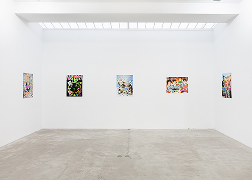

BRUCE PAVLOW
Poster Child
Extended through October 19, 2013
For additional information click here
Bruce Pavlow, I Love My Gay Moms, 2013, photograph, Gliclee print on
watercolor paper, 32 x 42 inches, Edition of 3 +2AP

Installation View: Bruce Pavlow, Poster Child, 2013, Shoot The Lobster, New York
Shoot The Lobster
540 West 29th Street
New York, NY 10000
212-560-0670
contact@shootthelobster.com
www.shootthelobster.com